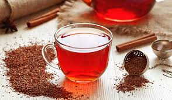

LA INFUSIÓN RICA EN MAGNESIO, CALCIO Y POTASIO QUE REDUCE EL COLESTEROL MALO

El té de rooibos, famoso por su color rojizo y su sabor suave y ligeramente dulce, gana popularidad en todo el mundo gracias a sus diversos beneficios para la salud.
¿CUAL ES LA DEFINICIÓN DE ROOIBOS?
El rooibos, conocido científicamente como Aspalathus linearis, es un arbusto que se origina principalmente en Sudáfrica. Su nombre en afrikáans, el idioma local, significa "arbusto rojo".
A diferencia de lo que se suele pensar, el rooibos no se considera té, ya que no proviene de la planta Camellia sinensis, que da lugar a las diversas variedades de té. Así lo indican representantes de la marca de infusiones Pompadour.
ROOIBOS: UN ALIADO PARA LA SALUD CON MÚLTIPLES BENEFICIOS PARA EL ORGANISMO
La infusión de rooibos destaca por sus múltiples beneficios para la salud, siendo una valiosa aliada en el cuidado del organismo. Según expertos de Tea Shop, estos son algunos de los aspectos más relevantes:
Protección celular: su riqueza en antioxidantes como la vitamina C, flavonoides, superóxido dismutasa y quercetina combate los radicales libres, responsables del envejecimiento celular y el estrés metabólico.
Cuidado de la piel: su acción antioxidante resulta útil para mantener la piel hidratada y combatir arrugas, además de ser empleado en la prevención y tratamiento de afecciones cutáneas por su contenido en zinc y ácidos.
Proteccón digestiva: actúa como antiespasmódico natural para aliviar cólicos, digestiones difíciles, dolores intestinales, diarrea y gases.
Bebida isotónica: ayuda a reponerse tras el ejercicio físico y previene calambres por su contenido en minerales y vitaminas.
Salud ósea y dental: su riqueza en flúor, calcio y manganeso contribuye al mantenimiento de huesos y dientes saludables.
Efecto antialérgico: la quercetina actúa como antihistamínico natural en casos de asma y alergias respiratorias o cutáneas.
Efecto relajante: cuida el sistema nervioso, previene la ansiedad y puede ser útil para evitar el insomnio y mejorar la calidad del sueño por su contenido de magnesio.
Cuidado vascular: puede ayudar a reducir la presión arterial gracias a sus flavonoides que mejoran la circulación sanguínea y contribuyen a la reducción del colesterol.
El té de rooibos también es libre de cafeína, lo que lo convierte en una opción ideal para disfrutar en cualquier momento del día. Además, su versatilidad permite combinarlo con diversas hierbas y frutas para crear infusiones únicas y personalizadas.